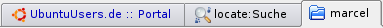
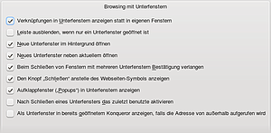
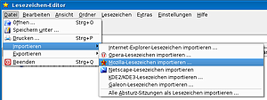
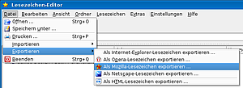
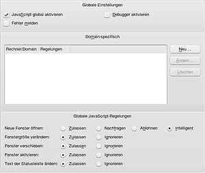
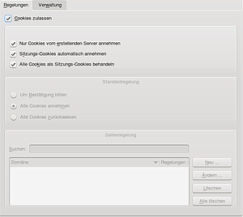
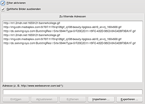
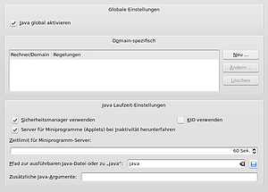
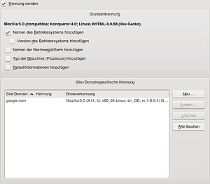
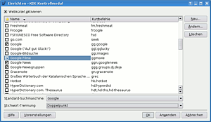

Konqueror
Dieser Artikel wurde für die folgenden Ubuntu-Versionen getestet:
Dieser Artikel ist größtenteils für alle Ubuntu-Versionen gültig.
Zum Verständnis dieses Artikels sind folgende Seiten hilfreich:
Konqueror  ist der Webbrowser der Desktopumgebung KDE. Konqueror kann jedoch wesentlich mehr als ein üblicher Browser. So ist er ein sehr mächtiger Dateimanager und kann durch die KPart-Technik fast jedes andere KDE-Programm ausführen. Mit KPart lassen sich ohne zusätzliche Plugin-Installation PDFs anzeigen, die Konsole kann eingebunden werden, und im Zusammenspiel mit Jovie kann Konqueror auch Texte vorlesen. Wegen dieser Möglichkeiten wird dieses mächtige Werkzeug auch als "Schweizer Taschenmesser der KDE" bezeichnet und ist besonders für fortgeschrittene Anwender sehr interessant. Konqueror startet zudem in der Desktopumgebung KDE schneller als jeder andere Browser.
ist der Webbrowser der Desktopumgebung KDE. Konqueror kann jedoch wesentlich mehr als ein üblicher Browser. So ist er ein sehr mächtiger Dateimanager und kann durch die KPart-Technik fast jedes andere KDE-Programm ausführen. Mit KPart lassen sich ohne zusätzliche Plugin-Installation PDFs anzeigen, die Konsole kann eingebunden werden, und im Zusammenspiel mit Jovie kann Konqueror auch Texte vorlesen. Wegen dieser Möglichkeiten wird dieses mächtige Werkzeug auch als "Schweizer Taschenmesser der KDE" bezeichnet und ist besonders für fortgeschrittene Anwender sehr interessant. Konqueror startet zudem in der Desktopumgebung KDE schneller als jeder andere Browser.
Die Mächtigkeit des Konquerors hat jedoch den Nachteil, dass viele Anfänger Schwierigkeiten mit dieser eierlegenden Wollmilchsau der KDE haben. Daher wurde mit Dolphin ein neuer Dateimanager entwickelt. Mittlerweile greift Konqueror sogar auf den neuen Standard Dolphin für die Dateiverwaltung zurück. Konqueror bleibt jedoch der Standard-Webbrowser und kann auch weiterhin Dateien verwalten.
Seit Ubuntu 14.04 wird Firefox als Standardbrowser genutzt. Konqueror kann bei Bedarf weiterhin genutzt werden und auch wieder als Standardbrowser eingestellt werden.
Installation¶
Konqueror ist, obwohl er ein elementarer Bestandteil von KDE ist, nicht mehr standardmäßig in Kubuntu installiert. Jedoch kann er über folgendes Paket nachinstalliert werden [1]:
konqueror (seit Ubuntu 14.04 in universe)
konq-plugins ( seit Ubuntu 14.04 in universe, verfügbare Plugins für Konqueror (Autorefresh, Browserkennung, etc.))
kde-service-menu-fuseiso (universe, ISO-Abbilder über das Servicemenü ein- / aushängen)
 mit apturl
mit apturl
Paketliste zum Kopieren:
sudo apt-get install konqueror konq-plugins kde-service-menu-fuseiso
sudo aptitude install konqueror konq-plugins kde-service-menu-fuseiso
Benutzer anderer Desktopumgebungen beachten bitte, dass die Installation von Konqueror viele Pakete von KDE über Abhängigkeiten mitinstalliert.
Benutzung¶
Konqueror startet man entweder über das K-Menü:
"Programme -> Internet -> Web-Browser (Konqueror)"
oder über den Befehl
konqueror
Wenn Konqueror als Standard-Browser in der KDE definiert ist, so wird er auch gestartet, wenn von einem anderen KDE-Programm aus eine Webseite geöffnet werden soll.

Einstellungen¶
Konqueror bietet sehr viele Einstellungen an. Diese erreicht man über das Menü "Einstellungen -> Konqueror einrichten". Wie das gesamte Programm sind die Einstellungen in die Bereiche Dateiverwaltung und Surfen im Internet eingeteilt. Die Einstellungsmöglichkeiten werden jeweils an der passenden Stelle erklärt. Zusätzlich gibt es einige allgemeine Einstellungen, wie Festlegung der Startseite und Benutzung von Unterfenstern.
Über den Reiter "Leistung" kann festgelegt werden, ob eine Instanz von Konqueror während des KDE-Starts bereits im Hintergrund geladen werden soll. Dies verringert die Startzeit des Konquerors beim ersten Aufruf, verlangsamt jedoch die Startzeit von KDE minimal.
Im Konqueror gibt es auch einige Einstellungen, die nicht direkt über die grafische Oberfläche erreichbar sind, jedoch dennoch sehr nützlich sein können. Hierfür existiert ein eigener Artikel: Versteckte Optionen in KDE.
Tabbed Browsing¶
Unter Tabbed Browsing versteht man, mehrere Unterfenster in einem gemeinsamen Fenster geöffnet zu haben. Wie alle modernen Webbrowser unterstützt auch Konqueror diese Funktion. Allerdings können im Konqueror nicht nur Webseiten als Unterfenster geöffnet werden, sondern alle von Konqueror unterstützten Anwendungen. Dies schließt die Dateiverwaltung, Systemeinstellungen, PDF-Dokumente, Bildervorschau und generell alle über KIO-Slaves erreichbaren Dienste ein.

Neues Unterfenster öffnen¶
Ein leeres Unterfenster kann über Strg + ⇧ + N oder einfacher mit Strg + T aufgerufen werden. Wenn man einen Link in einem neuen Unterfenster öffnen möchte, hält man die Taste Strg gedrückt und klickt auf den Link.
Mit der Maus gibt es ebenfalls mehrere Möglichkeiten. Zum einen befindet sich oben links neben den geöffneten Tabs ein Schalter. Wird er angeklickt, so öffnet sich ein leeres Unterfenster. Andererseits kann im Kontextmenü eines Links durch einen Klick auf "In neuem Unterfenster öffnen" die verknüpfte Webseite in einem neuen Unterfenster geladen werden.
Über das Kontextmenü der Reiterleiste sowie unter "Fenster -> Neues Unterfenster" kann ein neues Unterfenster geöffnet werden. Über diese beiden Menüs kann man auch Unterfenster schließen, duplizieren oder verselbständigen. Dies bedeutet, das Unterfenster wird in einem eigenen Konqueror-Fenster geladen.
Durch die Reiter wechseln¶
Wenn man eine Scrollrad-Maus besitzt, kann man mit dem Mauszeiger auf die Reiterleiste fahren und nach unten bzw. nach oben scrollen. Die Reiter können auch direkt mit der Maus angewählt werden.
Alle Reitern neu laden¶
Sollen alle Reiter neu geladen werden, genügt es, die Tasten ⇧ + F5 gleichzeitig zu drücken.

Einstellungen¶
Die Einstellungen zu Tabbed Browsing erreicht man über die Einstellungen des Konqueror. Hier wird direkt im Reiter "Allgemein" die Einstellungsoptionen unter "Browsing mit Unterfenstern" angezeigt. Es stehen folgende Optionen zur Auswahl: 
Verknüpfungen in Unterfenstern statt in eigenem Fenster anzeigen
Liste ausblenden, wenn nur ein Unterfenster geöffnet ist
Neue Unterfenster im Hintergrund öffnen
Neues Unterfenster neben aktuellem öffnen
Beim Schließen von Fenstern mit mehreren Unterfenstern Bestätigung verlangen
Den Knopf "Schließen" anstelle des Webseiten-Symbols anzeigen
Aufklappfenster ("Popups") in Unterfenstern anzeigen
Nach Schließen eines Unterfensters das zuletzt benutzte aktivieren
Als Unterfenster in bereits geöffneten Konqueror anzeigen, falls die Adresse von außerhalb aufgerufen wird
Mausgesten¶
Mit Mausgesten lässt sich Konqueror bequem und schnell steuern. So lässt sich beispielsweise durch eine kurze Mausbewegung ein neuer Tab öffnen oder der Tab wechseln, ohne die entsprechenden Elemente anklicken zu müssen.
Die Mausgesten lassen sich jedoch nicht über Konqueror konfigurieren, sondern nur über die KDE Systemeinstellungen. In KDE 3.5 sind diese über "Barrierefreiheit -> Tastenkombinationen" zu erreichen. In KDE 4 befinden sich die Einstellungen unter "Erweitert -> Tastenkombinationen". Es ist der Reiter "Gesten-Einstellungen" auszuwählen. Hier muss die Option "Mausgesten global deaktivieren" deaktiviert werden. Nun wählt man die Maustaste für die Mausgesten. Standard und vermutlich auch die vernünftigste Lösung ist die mittlere, da so keine Überschneidungen mit den "normalen" Belegungen der linken und rechten Maustaste entstehen.
Die Listenansicht "Aktionen" dient zum Navigieren durch die Gesten. Wenn man eine Geste auswählt, werden in den Reitern rechts Informationen dazu angezeigt. Im Reiter "Aktionstyp" wird das Muster der Mausgeste angezeigt, im Reiter "Tastenkürzel" wird diesem Muster eine Tastenkombination zugeordnet, welche beim Ausführen der Geste aufgerufen wird.
Ansichtsprofile¶
Konqueror erlaubt das Anlegen von Profilen. Ein Profil ist eine Zusammenstellung von beliebig vielen Tabs, die auf URLs oder Orte im Dateisystem verweisen, und generell Einstellungen am Browser (wie Vollbild). Das Anlegen von Profilen ist also eine sehr bequeme Möglichkeit, häufig ausgeführte Aktionen zu automatisieren und persönliche Anpassungen separat zu speichern.
Ein Ansichtsprofil kann ausgewählt werden, indem man über das Menü "Einstellungen -> Ansichtsprofil laden" das zu ladende Profil auswählt. Möchte man die aktuelle Ansicht speichern, so wählt man im Menü "Einstellungen" den Punkt "Ansichtsprofil ProfilName speichern ...". Über "Einstellungen -> Ansichtsprofile verwalten" ist es möglich, alle existierenden Profile zu konfigurieren.
Lesezeichen¶
Konqueror unterstützt Lesezeichen nicht nur für Webseiten, sondern auch für Verzeichnisse in der Dateiverwaltung. Dies ist eine sehr nützliche Funktion, um schnell in häufig benutzte Verzeichnisse zu wechseln. Alle Lesezeichen sind über das Menü "Lesezeichen" erreichbar. Zusätzlich lässt sich auch über das Kontextmenü der Werkzeugleiste oder über "Einstellungen -> Werkzeugleisten" eine Lesezeichen-Werkzeugleiste hinzufügen.
Konqueror enthält auch einen Lesezeichen-Editor, über den man komfortabel die Lesezeichen verwalten kann. Diesen öffnet man über "Lesezeichen -> Lesezeichen bearbeiten". Hier ist es auch möglich, Lesezeichen aus externen Anwendungen zu importieren oder für diese die Lesezeichen zu exportieren.
Importieren¶
Im Lesezeichen-Editor gibt es das Menü "Datei -> Importieren". Man hat hier u.a. folgende Auswahlmöglichkeiten:

"Internet-Explorer-Lesezeichen importieren" - Lesezeichen des Internet_Explorer importieren
"Opera-Lesezeichen importieren" - Lesezeichen aus Opera importieren
"Mozilla-Lesezeichen importieren" - Lesezeichen von Firefox importieren
"Netscape-Lesezeichen importieren"
"KDE2/KDE3-Lesezeichen importieren"
"Galeon-Lesezeichen importieren"
Nach der Auswahl eines Punktes wählt man die zugehörige Datei mit den Lesezeichen-Daten. Man wird gefragt, ob man die Lesezeichen "Als neuen Ordner" oder die vorhandenen Lesezeichen "Ersetzen" will. Falls man bereits Lesezeichen hat, sollte man "Als neuen Ordner" wählen.

Exportieren¶
Im Lesezeichen-Editor gibt es das Menü "Datei -> Exportieren". Man hat hier die gleichen Auswahlmöglichkeiten wie beim Import, kann aber die Lesezeichen auch in HTML exportieren.
Konqueror als Webbrowser¶
 Das KDE Projekt besitzt mit KHTML eine eigene HTML-Rendering- und mit KJS eine eigene JavaScript-Engine. Diese Engines gelten als besonders ausgereift und unterstützten sehr viele Standards. Sie werden jedoch nicht nur im KDE-Projekt verwendet. Die von Apple ins Leben gerufene Rendering-Engine WebKit , die unter anderem im Webbrowser Safari zum Einsatz kommt, ist eine Abspaltung (Fork) von KHTML und KJS. Die Engines WebKit/KHTML waren die ersten, die den Acid2-Test bestanden haben, und auch beim moderneren Acid3-Test gehörte WebKit neben Opera zu den ersten Engines, die diesen Test bestanden haben.
Das KDE Projekt besitzt mit KHTML eine eigene HTML-Rendering- und mit KJS eine eigene JavaScript-Engine. Diese Engines gelten als besonders ausgereift und unterstützten sehr viele Standards. Sie werden jedoch nicht nur im KDE-Projekt verwendet. Die von Apple ins Leben gerufene Rendering-Engine WebKit , die unter anderem im Webbrowser Safari zum Einsatz kommt, ist eine Abspaltung (Fork) von KHTML und KJS. Die Engines WebKit/KHTML waren die ersten, die den Acid2-Test bestanden haben, und auch beim moderneren Acid3-Test gehörte WebKit neben Opera zu den ersten Engines, die diesen Test bestanden haben.
Ab 15.04 ist WebKit zum Anzeigen von HTML- oder SVG-Dokumenten als bevorzugtes Anzeigemodul voreingestellt. Für ältere Ubuntu-Versionen geht man folgendermaßen vor:
Seit KDE 4.5 kann WebKit zum Anzeigen der genannten Dokumente genutzt werden. Dazu muss folgendes Paket nachinstalliert werden:
kpart-webkit (universe)
mit apturl
Paketliste zum Kopieren:
sudo apt-get install kpart-webkit
sudo aptitude install kpart-webkit
Danach über "Einstellungen -> Konqueror einrichten -> Dateizuordnung" oder über den Befehl:
keditfiletype text/html
im Reiter Einbetten für die enstprechenden Dateiendungen (also bspw. html oder svg+xml) die Priorität für WebKit höher einstellen als für KHTML (siehe auch How To Switch To WebKit in Konqueror Browser ). Damit besteht der Konqueror auch den Acid3-Test, außerdem werden SVG-Dateien in der Vorschau korrekt angezeigt.
JavaScript¶
 Konqueror bietet zwar die Möglichkeit, die Verwendung von JavaScript einzuschränken, jedoch nicht so komfortabel wie mit der von Mozilla Firefox bekannten NoScript-Erweiterung. Die Einstellungen zu JavaScript findet man über "Einstellungen -> Konqueror einrichten -> Java & JavaScript" im Reiter JavaScript. Hier kann man einstellen, ob JavaScript global verwendet werden soll, oder es können seitenspezifische Regeln festgelegt werden. So könnte man JavaScript global deaktivieren und nur für einige Seiten erlauben. Eine solche Einstellung ist jedoch nur bedingt zu empfehlen, da moderne Ajax-Anwendungen ohne JavaScript nicht funktionieren.
Konqueror bietet auch einige Einstellungen, um zu regeln, wie auf Ereignisse wie das Öffnen neuer Fenster in JavaScript reagiert werden soll. Hierüber lassen sich einige unangenehme Verhaltensweisen von Webseiten ausschalten.
Cookies¶
HTTP-Cookies bieten dem Webserver die Möglichkeit, eine kleine Information auf dem Rechner des Clients (Browser) abzuspeichern und später darauf zuzugreifen. Dies wird hauptsächlich dazu genutzt, um die Sitzung des Browsers zu identifizieren. So wird in der Regel die Sitzungs-ID im Cookie gespeichert und bei jeder weiteren Anfrage an den Server im HTTP-Request mitgesendet. Der Server kann an Hand der ID den Client identifizieren und überprüfen, ob noch eine gültige Sitzung besteht.
Leider werden Cookies auch (missbräuchlich) verwendet, um längerfristige Informationen zu speichern, also zum Beispiel einen Browser über Jahre hinweg anhand des Cookies zu identifizieren und somit das Nutzungsverhalten zu studieren. Dies möchte man natürlich zum Schutz der Privatsphäre vermeiden.
 Konqueror bietet die Möglichkeit, das Verhalten zur Annahme von Cookies zu regeln. Dazu öffnet man über das Menü "Einstellungen -> Konqueror einrichten -> Cookies". Hier kann man einstellen, ob Cookies global akzeptiert werden sollen. Zusätzlich lässt sich einstellen, wie mit Cookies umgegangen werden soll. Hierzu gibt es die Möglichkeit, nur Cookies vom ausstellenden Server zu akzeptieren, Sitzungs-Cookies automatisch zu akzeptieren und alle Cookies als Sitzungs-Cookies zu behandeln. Es empfiehlt sich, alle drei Optionen zu aktivieren. Sitzungs-Cookies erleichtern das Browsen und stellen keine Gefahr für die Privatsphäre da. Sie werden nur benutzt, um die Sitzung auf dem Server zu identifizieren. Sitzungs-Cookies werden nach der Beendigung der Sitzung automatisch gelöscht, daher empfiehlt sich auch die dritte Option, da somit automatisch alle Cookies gelöscht werden. Dies verhindert jedoch die manchmal angebotene automatische Anmeldung, bei der Benutzername und Passwort in einem Cookie gespeichert werden.
Verwendet man nicht die Einstellung, alle Cookies als Sitzungs-Cookies zu behandeln, dann hat man auch die Möglichkeit, sehr genau festzulegen, wie Cookies akzeptiert werden sollen. So kann man eine Standardregelung festlegen oder auch seitenspezifische Einstellungen vornehmen.
Über den zweiten Reiter "Verwaltung" kann man anschauen, welche Cookies auf dem Rechner liegen, und ihre gespeicherten Daten anschauen. Es ist auch möglich, einzelne oder alle Cookies zu löschen und eine Regel für das einzelne Cookie anzulegen.
Werbefilter¶
 Konqueror hat einen eingebauten Werbefilter, über den sich sehr einfach und schnell ungewollte Bilder ausblenden lassen. Den Werbefilter kann man über "Einstellungen -> Konqueror einrichten -> Werbefilter" konfigurieren. Hier lässt sich einstellen, ob der Werbefilter überhaupt aktiviert werden soll und ob die gefilterten Bilder ausgeblendet werden sollen.
Zusätzlich wird in einer Liste alle gefilterten Adressen angezeigt. Diese lassen sich selbstverständlich bearbeiten oder auch wieder löschen. Eine sehr nützliche Möglichkeit ist der Import oder Export der Filterliste. So lässt sich ein einmal konfigurierte Filter leicht auf einen anderen Rechner übertragen.
Um ein Bild zu filtern, muss man das Kontextmenü  des zu filternden Bild öffnen. Hier wird ein Menüpunkt "Bild blockieren" und einer, um alle Bilder auf der Webseite zu blockieren, angezeigt. Klickt man auf den Punkt "Bild blockieren" öffnet sich ein Dialog, in dem man die Adresse noch bearbeiten kann. So kann man über Platzhalter auch direkt alle Bilder eines Werbeservers blockieren.
des zu filternden Bild öffnen. Hier wird ein Menüpunkt "Bild blockieren" und einer, um alle Bilder auf der Webseite zu blockieren, angezeigt. Klickt man auf den Punkt "Bild blockieren" öffnet sich ein Dialog, in dem man die Adresse noch bearbeiten kann. So kann man über Platzhalter auch direkt alle Bilder eines Werbeservers blockieren.
Um nicht manuell jedes einzelne Bild blockieren zu müssen, gibt es Filterlisten. Eine mit Konqueror/KHTML kompatible ist das von Firefox bekannte EasyList  . Die Textdatei speichert man auf der Festplatte und importiert die Liste mit einem Klick auf "Importieren..." unter "Einstellungen -> Konqueror einrichten -> Werbefilter".
. Die Textdatei speichert man auf der Festplatte und importiert die Liste mit einem Klick auf "Importieren..." unter "Einstellungen -> Konqueror einrichten -> Werbefilter".
Der Werbefilter wird nicht nur im Konqueror verwendet, sondern in allen Anwendungen, die KHTML verwenden. So werden zum Beispiel auch im Akregator Werbebilder gefiltert.
Plugins¶
Konqueror implementiert die Plugin-Schnittstelle NPAPI von Netscape und Mozilla Firefox. Somit kann jedes Browser-Plugin, das im Firefox funktioniert, prinzipiell auch im Konqueror verwendet werden. Somit beherrscht Konqueror Adobe Flash, Java und sehr viele Multimedia-Plugins. Es ist jedoch nicht möglich, Firefox/Erweiterungen direkt zu installieren.
Um herauszufinden, welche Plugins eigentlich installiert sind, kann man im Konqueror-Adressfeld die folgende Adresse aufrufen:
about:plugins
Einstellungen zu den installierten Plugins findet man unter "Einstellungen -> Konqueror einrichten -> Erweiterungen". Hier kann man einstellen, ob Plugins überhaupt verwendet werden sollen (Menüpunkt: Erweiterungsmodule global aktivieren), bzw. sie auf einzelne Seiten beschränken. Außerdem kann man auch hier sehen, welche Plugins installiert sind, und nach neuen Plugins suchen.
Unabhängig von der globalen Einstellung können die verfügbaren Plugins bei Bedarf über "Extras -> HTML-Einstellungen -> Module" jederzeit manuell aktiviert oder deaktiviert werden.
Bei global deaktivierten Plugins (Menüpunkt "Erweiterungsmodule global aktivieren" abgewählt) werden automatisch die Webseiten für Browser ohne Flash angeboten (im Gegensatz zu Flashblock oder ähnlichen Plugins bei Firefox und Chromium).
Java¶
 Speziell für das Java-Browser-Plugin lassen sich zusätzliche Einstellungen vornehmen. Dieses Plugin wird nur dann benötigt, um Java-Applets wie z.B. Chatprogramme, Datenbankverwaltungssysteme etc. im Konqueror anzuzeigen. Die Einstellungen zu Java kann man über "Einstellungen -> Konqueror einrichten -> Java & JavaScript" im Reiter "Java" vornehmen.
Es lassen sich unter anderem Einstellungen für die Sicherheit vornehmen. So kann man entscheiden, ob man Java global aktivieren will. Dies bedeutet, dass jedes Java-Applet geladen und gestartet wird. Es lässt sich jedoch auch Domain-spezifisch einstellen, ob ein Java-Applet ausgeführt werden soll. So kann man, wenn man Java bei einer Webseite benötigt, für diese Seite Java erlauben und dennoch Java global deaktivieren.
Hierfür befindet sich ein "Domain-spezifisch" Bereich im Einstellungsdialog mit einer Tabelle, in der alle existierenden Regeln angezeigt werden. Daneben befinden sich Schaltflächen "Neu...", "Ändern..." und "Löschen", um neue Regeln anzulegen oder bestehende Regeln zu bearbeiten bzw. zu löschen. Bei jeder Regel muss nur die Domain angegeben werden und das erwünschte Verhalten: Ablehnen oder Annehmen.
Browserkennung¶
Alle Webbrowser senden bei jeder Anfrage an den Webserver eine identifizierende Kennung. Viele Webseiten benutzen diese Kennung zum einen, um Statistiken anzufertigen, zum anderen aber, um an der Kennung den Browser zu erkennen und Browserweichen zu setzen. Mit Hilfe dieser können die Webseiten dynamisch auf fehlerhafte Implementierungen reagieren und so sicherstellen, dass die Webseite auf jedem Browser korrekt dargestellt wird.
 Viele Webseiten überprüfen jedoch nur auf einige wenige bekannte Browser wie Mozilla Firefox oder Microsoft Internet Explorer. Andere Webbrowser werden auf diesen Seiten zum Teil direkt durch die Browserweiche ausgeschlossen, obwohl sie die Seite korrekt darstellen könnten. Für solche Fälle bietet der Konqueror die Möglichkeit, die Browserkennung zu ändern. Der Konqueror sendet dann an den Webserver die Kennung von zum Beispiel Mozilla Firefox, und die Browserweiche sieht den Konqueror dann auch als Firefox an.
Die Browserkennung lässt sich sehr einfach über das Menü "Extras -> Browserkennung ändern" verändern. Hier kann über Untermenüs ausgewählt werden, welcher Browsertyp in welcher Version zum Server gesendet werden soll. Für Webseiten, die der Konqueror aufgrund von Browserweichen nicht korrekt darstellt, empfiehlt sich, die Kennung von Safari zu verwenden, da viele Seiten diesen Browser abfragen und wie anfangs erläutert die Rendering Engines der Browser sehr ähnlich sind.
Es können auch globale Einstellungen für die Browserkennung vorgenommen werden. Dazu öffnet man die Einstellungen unter "Einstellungen -> Konqueror einrichten... -> Browsererkennung". Hier lässt sich die Standardkennung bearbeiten, und man kann seitenspezifische Kennungen konfigurieren. So kann man festlegen, dass für eine Domain immer zum Beispiel die Kennung von Mozilla Firefox verwendet werden soll. Es ist auch möglich, das Senden der Kennung ganz zu unterdrücken. Dies ist aber aus den daraus entstehenden Problemen bei Webseiten mit Browserweichen nicht zu empfehlen.

Websuche¶
Konqueror enthält sehr elegante Möglichkeiten, um in Suchmaschinen oder generell bei Webseiten, die eine Suche anbieten, zu suchen. Es gibt eine Suchleiste als Erweiterung, mit der man wie bei Firefox über ein Eingabefeld neben der Adressleiste bei einem eingestellten Suchanbieter suchen kann. Über das "Suchen"- Symbol kann man den ausgewählten Suchanbieter ändern.
Eine weitere Suchmöglichkeit existiert über die sogenannten Webkürzel, mit denen man direkt in der Adressleiste bei einem Suchanbieter suchen kann. Eine Sucheingabe sieht dabei folgendermaßen aus:
webkürzel:Suchbegriff
 Konqueror besitzt bereits eine große Anzahl an vordefinierten Webkürzeln. Diese kann man über "Einstellungen -> Konqueror einrichten -> Webkürzel" ansehen und verändern. Es ist auch möglich, mehrere Kürzel für einen Suchanbieter zu definieren.
Mit einem Klick auf eine Ankreuzbox aktiviert man eine Suche für die Erweiterung "Suchleiste", wie man sie vom Firefox kennt. Die Ankreuzbox hat keine Auswirkung auf die Webkürzel.
Mit einem Klick auf "Neu..." kann man auch eigene, neue Webkürzel definieren. "Suchanbieter" ist einfach nur der Name der Suche, er wird in der Suchleiste - falls aktiviert - angezeigt. "Webkürzel" gibt das Kürzel an, mit dem gesucht werden soll. Das {@} stellt eine Variable dar, hier wird der Begriff gespiegelt, welcher hinter "WEBKÜRZEL:<suchbegriff>" eingegeben wird.
Passwortverwaltung¶
Konqueror kann Passwörter in der digitalen Brieftasche speichern. Somit braucht man beim erneuten Besuchen einer Passwort-geschützten Webseite die Zugangsdaten nicht erneut einzugeben. Die Eingabefelder werden direkt aus der Brieftasche ausgefüllt. Selbstverständlich kann die Brieftasche über ein Passwort geschützt werden, und der Zugriff durch Konqueror kann auch eingeschränkt werden.
In KDE 4 sind die Schaltflächen beim Speichern eines Passwortes etwas unglücklich gewählt. "Nein" hat die Bedeutung "Nie für diese Webseite", und "Abbrechen" hat die Bedeutung "dieses Mal nicht speichern, zukünftig erneut fragen".
Möchte man ein Passwort auf einer Webseite speichern, für die man zuvor einmal "niemals speichern" ausgewählt hatte, so muss man die Datei ~/.kde/share/apps/khtml/formcompletions (oder auch ~/.kde4/share/apps/khtml/formcompletions) in einem Editor öffnen [3]. Nun muss man am Ende der Datei im Bereich
[NonPasswordStorableSites]
bei "Sites=" die entsprechende Webseite entfernen. Nach einem Speichern der Datei fragt Konqueror wieder auf der Webseite, ob das Passwort gespeichert werden soll.
Konqueror zum Standard-Browser machen¶
Unter Systemeinstellungen->Dateizuordnungen sollte für "text/html" Konqueror als erstes in der Liste der Anwendungen stehen. Danach wählt man unter Systemeinstellungen -> Standard-Anwendung -> Webbrowser den Punkt "in einem Programm, das auf Inhalten der Adresse basiert" aus.
Ab Kubuntu 15.04 werden wegen der Umstellung auf Plasma 5 nicht alle Einstellung aus den Systemeinstellungen in die richtigen Konfigurationsdateien geschrieben. Hier trägt man die Einstellung am besten per Hand in die Konfigurationsdateien ein.
So fügt man in ~/.kde/share/config/kdeglobals direkt unterhalb des Menüpunkts "[General]" die Zeichenkette BrowserApplication[$d] ein. Ab Kubuntu 15.10 ändert man zusätzlich die Datei ~/.config/kdeglobals nach dem gleichen Schema. Nach dem Speichern ist Konqueror der Standard-Browser.
Konqueror als Dateimanager¶
 Konqueror war bis einschließlich Feisty Fawn 7.04 der Standard-Dateimanager von Kubuntu. In Gutsy Gibbon wurde er von Dolphin abgelöst. Dolphin ist im Gegensatz zum Konqueror ein reiner Dateimanager und somit einfacher zu benutzen. Ab KDE 4 ist Dolphin auch generell der Standard-Dateimanager der KDE, Konqueror greift nun sogar auf Dolphin im Dateimanager-Modus zurück. Man kann somit zwischen zwei gleichwertigen Dateimanagern wählen.
Konqueror war bis einschließlich Feisty Fawn 7.04 der Standard-Dateimanager von Kubuntu. In Gutsy Gibbon wurde er von Dolphin abgelöst. Dolphin ist im Gegensatz zum Konqueror ein reiner Dateimanager und somit einfacher zu benutzen. Ab KDE 4 ist Dolphin auch generell der Standard-Dateimanager der KDE, Konqueror greift nun sogar auf Dolphin im Dateimanager-Modus zurück. Man kann somit zwischen zwei gleichwertigen Dateimanagern wählen.
Konqueror zum Standard-Dateimanager machen¶
Wer lieber Konqueror als Standard-Dateimanager benutzen möchte, kann dieses natürlich auch einstellen.
Dazu öffnet man die Systemeinstellungen und wählt den Punkt "Standard-Komponenten". Hier kann man nun unter Dateimanager Konqueror aus einer Liste auswählen.
 Im Konqueror öffnet man die Einstellungen über "Einstellungen -> Konqueror einrichten -> Dateizuordnung". Hier expandiert man den Punkt "inode" und wählt den Punkt "directory". Nun kann man über die "Rangfolge der zugeordneten Anwendungsprogramme" Konqueror nach oben an die erste Stelle setzen. Nach einem Klick auf "Anwenden" ist Konqueror der Standard-Dateimanager.
Im Konqueror öffnet man die Einstellungen über "Einstellungen -> Konqueror einrichten -> Dateizuordnung". Hier expandiert man den Punkt "inode" und wählt den Punkt "directory". Nun kann man über die "Rangfolge der zugeordneten Anwendungsprogramme" Konqueror nach oben an die erste Stelle setzen. Nach einem Klick auf "Anwenden" ist Konqueror der Standard-Dateimanager.
Entfernte Dateisysteme managen¶
Wie jede KDE-Anwendung kann auch Dolphin bequem auf einen ftp-Server zugreifen. Die generelle Funktionsweise findet man im Artikel FTP.
Falls der Server auch SSH unterstützt, findet man im Artikel KIO-slaves weitere informationen zur Anwendung.
Ansicht aufteilen¶
Konqueror bietet die Möglichkeit, die Ansicht aufzuteilen, um in einem Fenster oder Tab mehrere Ansichten zu haben und somit ein Verhalten, wie vom Midnight Commander bekannt, zu haben. Die Teilung des Fensters in zwei Bereiche ist nützlich, um zum Beispiel Dateien von einem in ein anderes Verzeichnis zu kopieren.
Um die Ansicht aufzuteilen, gibt es mehrere Möglichkeiten. Man kann über "Fenster -> Ansicht in linke und rechte Hälfte teilen" (Tastenkürzel Strg + ⇧ + L ) oder über "Fenster -> Ansicht in obere und untere Hälfte teilen" (Tastenkürzel Strg + ⇧ + T ) die Ansicht entweder horizontal oder vertikal teilen. Die gleichen Optionen sind auch über das Kontextmenü der Statusleiste erreichbar.
Über "Fenster -> Aktive Ansicht schließen" (Tastenkürzel Strg + ⇧ + R ) kann man die aktive Ansicht schließen, womit die Teilung wieder aufgehoben wird. Dies verhält sich also gegenteilig zum Dolphin der KDE 4, in der bei geteilter Ansicht die inaktive Ansicht geschlossen wird.

Terminal-Emulator¶
Konqueror bietet einen einfachen Zugriff auf den Terminal-Emulator. So kann man über "Extras -> Terminal öffnen" (Tastenkürzel F4 ) die Konsole öffnen. Dabei wird die Shell direkt in dem Verzeichnis geöffnet, in dem man sich gerade im Konqueror befindet.
Eine noch einfachere Möglichkeit, um Zugriff auf den Terminal-Emulator zu erhalten, ist das direkte Anzeigen des Emulators im Konqueror. Diesen kann man über "Fenster -> Terminal-Emulator anzeigen" (Tastenkürzel F8 ) öffnen. Hier wird im unteren Bereich des Konquerors die Konsole geladen. Somit kann man Shell-Befehle direkt im Konqueror ausführen. Den Terminal-Emulator kann man über "Fenster -> Terminal-Emulator ausblenden" wieder ausblenden.
Hinweis:
Hier gibt es trotz identischer Funktionalität einige Unterschiede zwischen der KDE-3.5- und KDE-4-Variante. Die genannten Menüpunkte fehlen im Konqueror der KDE 3.5, und das Tastenkürzel zum Öffnen des eingebetteten Terminals fehlt im Konqueror der KDE 4.
Navigationsbereich¶
Konqueror enthält auch einen Navigationsbereich, der in einer Seitenleiste angezeigt wird. Diese Seitenleiste kann man über die Taste F9 ein- und ausblenden oder über "Fenster -> Navigationsbereich anzeigen" bzw. "Fenster -> Navigationsbereich ausblenden".
Die Seitenleiste enthält mehrere Bereiche, welche über Knöpfe erreichbar sind. So kann man zum Beispiel über den Knopf Persönlicher Ordner den Verzeichnisbaum des Home-Verzeichnises anzeigen. Die Seitenleiste enthält auch Knöpfe, um auf Bereiche des Webbrowsers wie die Lesezeichen oder den Verlauf zuzugreifen.
Problembehebung¶
Webseiten laden sehr langsam¶
Bei einigen wenigen Benutzern kann es vorkommen, dass sich der Konqueror und auch der Akregator extrem langsam verhalten, was das Laden von Webseiten angeht. Die Lösung dieses Problems ist das Deaktivieren der IPv6-Unterstützung in KDE: Die Datei /etc/environment mit Root-Rechten[4] in einem Editor [3] öffnen und diesen Eintrag hinzufügen:
KDE_NO_IPV6=true
Schrift mal zu groß, mal zu klein¶
Um dieses Problem in den Griff zu kriegen, kann man unter "Einstellungen -> Konqueror einrichten... -> Schriftarten" die mittlere Schriftgröße auf 12 setzen.
Statusleiste weg¶
Wenn aus unerfindlichen Gründen plötzlich die Statusleiste verschwunden ist, dann kann man sie so wiederherstellen: Die Datei ~/.kde/share/apps/konqueror/profiles/webbrowsing in einem Editor öffnen, hier "StatusBar=Enabled" einstellen (statt: "StatusBar=Disabled").
Datum- oder Uhrzeitangaben scheinen unsinnig¶
Verwendet man die Unity-Oberfläche und zeigen die Gnome-Programme, z.B. der Dateimanager Nautilus, Datum und Uhrzeit korrekt an, etwa "9. Nov 2001, 13:00 Uhr", aber Konqueror präsentiert scheinbar unsinnige Zahlen wie "11/09/01 01:00PM", dann stimmen die landesspezifischen Einstellungen ("locale") von Gnome und KDE nicht überein. Abhilfe schafft man durch Nachinstallieren des Pakets "KDE System Settings", Aufruf desselbigen und dort im Unter-Dialog "Locale".
 Übersicht
Übersicht- Erstellt mit Inyoka
-
 2004 – 2017 ubuntuusers.de • Einige Rechte vorbehalten
2004 – 2017 ubuntuusers.de • Einige Rechte vorbehalten
Lizenz • Kontakt • Datenschutz • Impressum • Serverstatus -
Serverhousing gespendet von